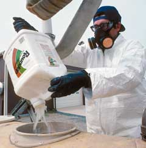

Genetically engineered (GE) foods have been touted as the answer tothe age-old competition of crops versus weeds. Genetic engineeringadvocates claimed that if plants are engineered to be resistant toapplications of Roundup (a glyphosate herbicide manufactured by theGE-promoting firm Monsanto) then they would require fewer toxicherbicides to help them grow. But now, data from the United StatesDepartment of Agriculture'sNational AgriculturalStatistics Service shows that these genetically modified foodcrops actually are requiring more and more help from otherherbicides during the growth cycle ? not less.
The number of weeds that are resistant to glyphosate is increasing,because their genes can travel quickly when their pollen spreads.According to agriculture policy expert,Dr.Charles M. Benbrook, the beginnings of this environmental andeconomic problem can be seen in a weed called 'marestail.' Dr.Benbrook says that as a result of heavy reliance on Monsanto'sRoundup, 'marestail will almost certainly be the first of severalglyphosate-resistant weeds that emerge and spread,' triggering theneed for the creation of a new toxic herbicide.
Some farmers are apparently willing to ignore the degradationcaused by releasing so many toxic chemicals into our environment,because they need to find ways to decrease their costs. Butopponents of genetic engineering argue that the only ones whobenefit from genetically modified crops are the companies that sellthem.
For more information on genetically engineered foods, visit:
|
 |
|
|